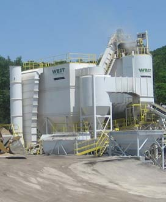

Preservation
New Technology In Warm Mix Asphalt Reduces Impact On Environment
Over the past several years, numerous agencies have teamed up to reduce air emissions including greenhouse gases and other contributors to climate change. One of these technologies is warm mix asphalt that reduces the temperature necessary for asphalt production at an asphalt plant. Conventional asphalt pavements are produced around 320 degrees while warm-mix asphalt is produced from 212 degrees to 280 degrees.
The benefits of warm mix asphalt include reduced fuel consumption and emissions from the asphalt plants during the production process. Fuel consumption is reduced by an average of 20 percent during the manufacturing process. This in turn decreases the overall greenhouse gas emissions by 5 percent. Warm mix asphalt has also been proven to extend the paving season in northern climates, increases the percentage of RAP used in mix designs, and extends the life and performance of the asphalt pavement. All of this is accomplished without comprising the quality of the final product!
Learn more by viewing New Technology Results In Better Missouri Roadways.
You can also find out more about the industry’s efforts by reading NAPA’s Sustainability Report – Black and Green: Sustainable Asphalt, Now & Tomorrow.
NAPA also provides an excellent overview on the Benefits of Asphalt.
Did you know . . .
- In the late 1980s, NAPA (National Asphalt Pavement Association) worked with the EPA on research into air emissions, including greenhouse gases from asphalt plants. Studies showed emissions from asphalt plants are low and well controlled resulting in the EPA declaring that asphalt plants are not a major source of hazardous air pollutants.
- The asphalt industry has still done its part over the years trying to minimize any effect it has on the environment. From 1970 to 1999 total emissions from asphalt operations decreased by 97 percent while production of asphalt pavement material increased by 250 percent.
- Asphalt pavements require only about half the energy to produce and construct than other pavements.
- Less energy is consumed in maintenance and reconstruction of asphalt pavement than any other pavements.
- Producing and placing asphalt pavements consumes 40 percent less energy than continuously reinforced concrete pavements.
- Between 1970 and 1999, the asphalt industry increased production by 250 percent while reducing total emissions by 97 percent.